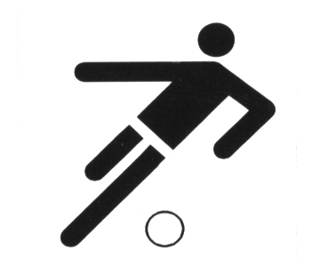
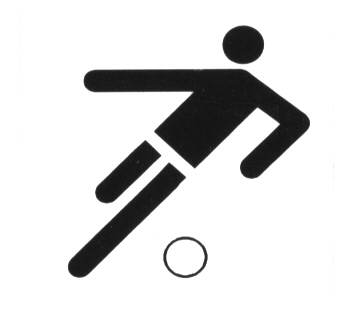

Pflichtattribute
src = Quelle, Angabe, wie das Bild heisst und wo es liegt
alt = Alternativer Text, der angezeigt wird, wenn das Bild nicht geladen werden kann. Wichtig fuer Screenreader!
Optionale Attribute
width = Breite des Bildes, z.B. in Pixel. Empfehlung: moeglichst nur einen Wert fuer width angeben, die Hoehe passt sich proportional an. Bildgroessen spaeter optimal ueber CSS
height = Hoehe des Bildes
title = wird beim hovern ueber das Bild angezeigt

 

Bilder sind keine Blockelemente, sondern inline-Elemente. Sie sind freundlich und lassen andere Elemente neben sich zu. Sie koennen mit einer width-Angabe versehen werden. Wenn die tags direkt aneinander geschrieben werden, gibt es keinen Abstand. Ein Leerzeichen oder eine neue Zeile erzeugt einen Zwischenraum von einem Leerzeichen
Bildpfade
Bei Webprojekten sollte die Bildverknuepfung immer relativ sein. Bilder im aktuellen Verzeichnis werden mit ./ angesprochen. Bilder in hoeheren Verzeichnissen liegen mit ../ (siehe Bildreferenzierungen)